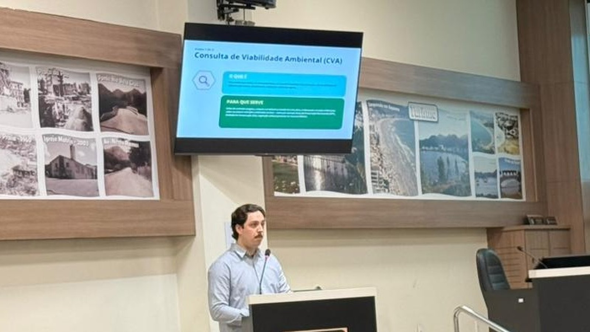
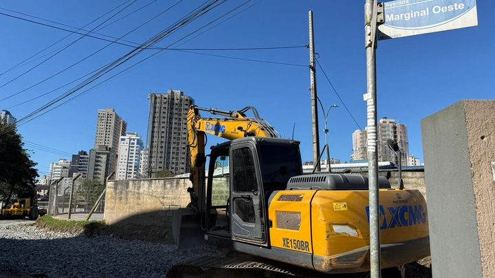

Itapema · Meio Ambiente
Itapema · Meio AmbienteFAACI marca reunião pública para explicar as novas regras ambientais de obra em Itapema
A convocação da reunião que aconteceu em 2 de setembro.
Quem for erguer prédio de 10 unidades ou mais, hospedagem de 50 leitos ou mais ou comércio de 2.000 metros quadrados ou mais em Itapema agora precisa de Certidão de Aprovação antes de começar e de Certidão de Conclusão no fim. A FAACI apresentou o novo fluxo em reunião na Câmara, no dia 2 de setembro. As instruções normativas que criam o caminho foram assinadas em 19 de agosto e já estão valendo, mas elas mesmas dizem que o prazo de resposta da fundação sai depois, em outro ato.
Em 30 segundos · Modo de Leitura, formato original Santa Informa
Itapema mudou o caminho ambiental de quem constrói.
O órgão é a FAACI.
O novo fluxo tem três etapas.
Primeiro a Consulta de Viabilidade Ambiental.
Ela diz se o terreno tem APP, unidade de conservação ou mata nativa.
Depois a Certidão de Aprovação, antes da obra.
No fim, a Certidão de Conclusão.
As duas certidões valem para obra grande.
10 unidades ou mais num prédio residencial.
50 leitos ou mais em hospedagem.
2.000 m² ou mais em comércio.
E só onde a área já tem rede de esgoto.
Onde não tem, continua o licenciamento trifásico.
Em unidade de conservação, as certidões não se aplicam.
Negou, cabe recurso em 20 dias úteis.
O protocolo é pela Plataforma 1Doc.
O prazo de análise da FAACI ainda não foi fixado.
Meio AmbientePublicada em Redação Santa Informa

Quem vai construir em Itapema passou a ter um roteiro ambiental com três paradas. A Fundação Ambiental Área Costeira de Itapema, a FAACI, apresentou o novo fluxo em reunião pública na Câmara, na quarta-feira, 2 de setembro. A primeira parada é a Consulta de Viabilidade Ambiental, a CVA. Depois vem a Certidão de Aprovação, antes da obra sair do papel. No fim, a Certidão de Conclusão, que atesta que o construído bate com o aprovado. As duas certidões não são para todo mundo: valem para prédio residencial de 10 unidades ou mais, hospedagem com 50 leitos ou mais, comércio a partir de 2.000 metros quadrados e obra mista que bata num desses limites.
A CVA é a etapa de olhar o terreno antes de gastar dinheiro. Ela verifica se ali existe Área de Preservação Permanente, unidade de conservação ou vegetação nativa, e a FAACI recomenda pedir ainda no planejamento, antes de contratar projeto ou comprar o terreno. São quatro tipos de consulta: para imóveis, para construção, para desmembramento de solo urbano e para inscrição de ocupação em terreno da União, na SPU. Um detalhe que costuma pegar: a CVA não dispensa licença ambiental de atividade licenciável, nem autorização para mexer em APP ou cortar mata nativa. A matrícula do imóvel precisa estar atualizada, com no máximo 90 dias, e todo protocolo vai pela Plataforma 1Doc.
Esse é o ponto que o anúncio oficial não destacou e está escrito no artigo 3º da instrução normativa nº 02. As Certidões de Aprovação e de Conclusão só são exigidas se, na área da obra, já existir sistema de coleta e tratamento de esgoto. Onde a rede ainda não opera, continua valendo o licenciamento trifásico de sempre, conforme a Resolução CONSEMA nº 251/2024. Em Itapema, o endereço decide o caminho. As certidões também não se aplicam a obra dentro de unidade de conservação. Se o projeto aprovado mudar de forma relevante, a FAACI tem que ser avisada, e a certidão pode ser revista ou cancelada.
Quando noticiamos a convocação da reunião, em 28 de agosto, escrevemos que o anúncio não dizia o que mudava em prazo, em taxa e em documento exigido. Duas das três respostas vieram. A do prazo, não. As instruções normativas estão em PDF no site da FAACI e mostram por quê: o artigo 11 da IN 01 e o artigo 14 da IN 02 mandam o prazo de análise, de emissão e de validade ser definido depois, em outro ato da própria fundação, que ainda não aparece na página. O prazo do outro lado já está fixado: negada a certidão, o interessado tem 20 dias úteis para recorrer ao presidente, pelo setor de protocolo. As três instruções foram assinadas em 19 de agosto e valem desde a publicação, então já estavam em vigor no dia da reunião.
O resumo de 30 segundos está no topo e a versão completa é o texto acima. Aqui ficam as três leituras da casa sobre o mesmo assunto.
Clara, a otimista
Chamar construtora, projetista e proprietário para uma sala e explicar a regra com slide na tela é o tipo de coisa que economiza mês de retrabalho. Melhor ainda: as instruções normativas estão em PDF aberto no site, com artigo e número, para quem quiser conferir sem depender de intermediário.
E tem a ideia por trás do desenho, que é boa. Pedir a consulta de viabilidade antes de comprar o terreno evita a pior das histórias, a de descobrir a Área de Preservação Permanente depois de assinar a escritura. Quem usar essa primeira etapa direito vai gastar menos.
Seu Prudêncio, o criterioso
Merece atenção o prazo que ficou para depois. Um fluxo de três etapas é organizado, mas quem monta cronograma de obra precisa saber quantos dias cada etapa consome. Enquanto o ato normativo do prazo não sai, o empreendedor planeja no escuro, e cronograma no escuro vira custo financeiro.
Vale acompanhar também a régua do esgoto. A certidão só é exigida onde a rede está em operação, e essa informação, hoje, não está numa lista pública fácil de achar. Uma sugestão útil seria a fundação publicar o mapa das áreas atendidas, porque é ele que diz, na prática, qual caminho o processo segue.
Dito isso, o rumo é bom. Separar consulta prévia, aprovação e conclusão em documentos distintos deixa claro o que se cobra em cada momento, e a exigência de comunicar mudança de projeto protege quem aprovou e quem vai morar. Publicar as instruções na íntegra, com artigos numerados, é postura de quem quer ser cobrado pela própria regra.
Caco, o sarcástico
Boa notícia: o processo ambiental de Itapema agora tem três etapas bem definidas. Notícia mediana: ninguém sabe ainda quanto tempo leva cada uma. É como receber o cardápio completo sem os preços.
E olha que a regra faz uma pergunta bem catarinense antes de tudo: tem esgoto aí na sua rua? Tem, vai por um caminho. Não tem, vai por outro. Nunca o cano foi tão decisivo na vida de um empreendimento.
Piada feita, publicar a instrução inteira em PDF é jeito certo de fazer. Regra que a pessoa consegue ler é regra que a pessoa consegue cumprir.
Fontes: Prefeitura de Itapema, notícia publicada em 3 de setembro de 2026, de onde saem a realização da reunião pública em 2 de setembro na Câmara, as três etapas do novo fluxo, a base na Lei Municipal nº 5.086/2026 e no Decreto Municipal nº 218/2026, a manutenção do licenciamento trifásico onde não há rede de esgoto em operação segundo a Resolução CONSEMA nº 251/2024, o protocolo pela Plataforma 1Doc, a fala da presidente Luciana Saramento e o endereço e os telefones da fundação. Os limites de 10 unidades, 50 leitos e 2.000 metros quadrados, a condição de existir sistema de coleta e tratamento de esgoto, a exclusão das unidades de conservação, o prazo de 20 dias úteis para recurso, a obrigação de comunicar mudança relevante de projeto e a definição do prazo de análise em ato posterior estão nos artigos 3º, 8º, 13º, 14º e 15º da Instrução Normativa FAACI nº 02. Os quatro tipos de consulta de viabilidade, a ressalva de que a CVA não dispensa licença nem autorização, a matrícula com no máximo 90 dias e o adiamento do prazo de análise estão nos artigos 1º, 2º, 11º e 12º da Instrução Normativa FAACI nº 01. A existência da Instrução Normativa FAACI nº 03, sobre autorização para intervenção em Área de Preservação Permanente, e a data de assinatura das três, 19 de agosto de 2026, foram conferidas nos próprios documentos, listados na página de instruções normativas da FAACI. A foto do topo é de divulgação oficial da Prefeitura de Itapema e foi recortada por nós para tirar a plateia do quadro.
Itapema · Meio AmbienteA convocação da reunião que aconteceu em 2 de setembro.
 Itapema · Serviço
Itapema · ServiçoA rede de esgoto que agora decide qual caminho a obra segue.

Itapema · InfraestruturaOutra obra da cidade que passou pela mesa do município.